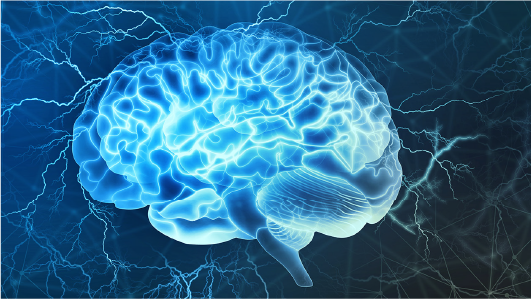

Touching lives, one patient at a time.
Providing all our best. Because Your Life Matters. Fast, friendly and accurate care for you
24/7 Emergency Hotline
+91 9911 2336 11 |
Touching lives, one patient at a time. Providing all our best. Because Your Life Matters. Fast, friendly and accurate care for you |
24/7 Emergency Hotline +91 9911 2336 11 |
 |
|
Neurosurgery is the medical specialty concerned with the disorders of the nervous system including the brain, spinal cord, central and peripheral nervous system, and cerebrovascular system.
Neurosurgeons at Kamineni Hospitals diagnose and treat a wide variety of diseases or disorders. Neurological disorders include disorders of the brain, spinal cord, nerves, and muscle. Neurosurgery specialists treat conditions like dementia, Headache, trigeminal neuralgia, and other issues related to the brain, nerves, and spine. Our seasoned Neurosurgeons at Kamineni Hospital provide both non-surgical and surgical treatment options.
The human nervous system is a vast field to study and diagnose, So neurosurgeons choose to specialize in specific fields of the nervous system. Based on your age and the type of disorder you are experiencing, you will need to consult specific neurosurgeons.
Neurosurgery specialists at kamineni hospitals perform several tests to identify the common to complex neurological disorders in patients. Once the type and stage of the neurology disease are detected further procedures will be done to provide the most effective treatment. We provide technically demanding procedures that help adults and children with complex and serious conditions. Spine and neurosurgery specialists at Kamineni Hospitals are equipped with innovative technologies.
|
INFINITE HOSPITALS |